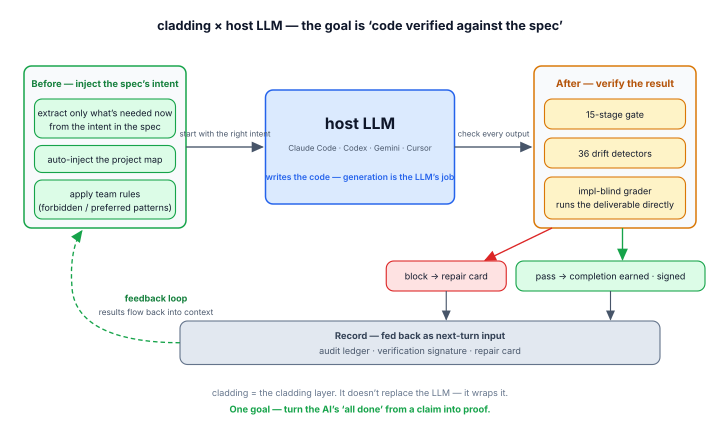
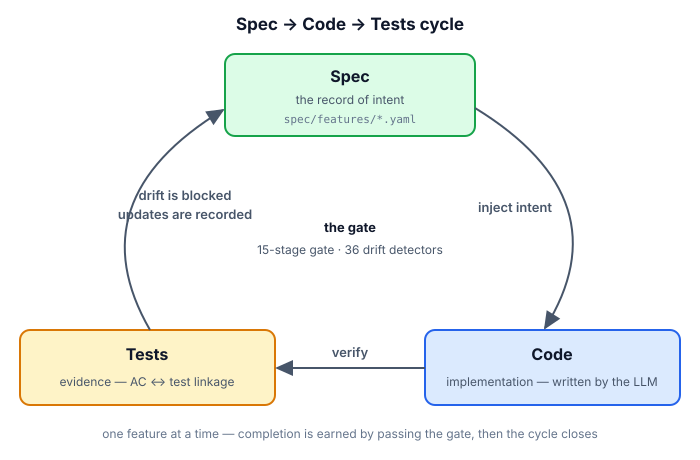
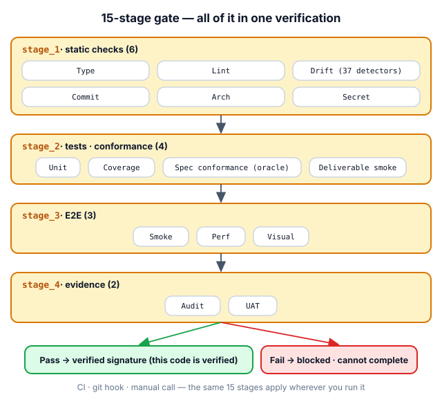
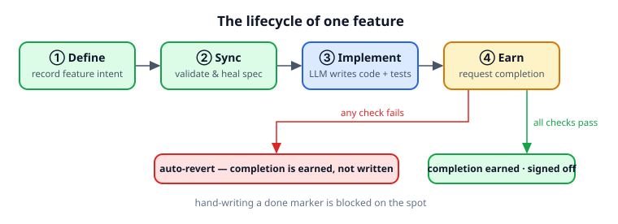
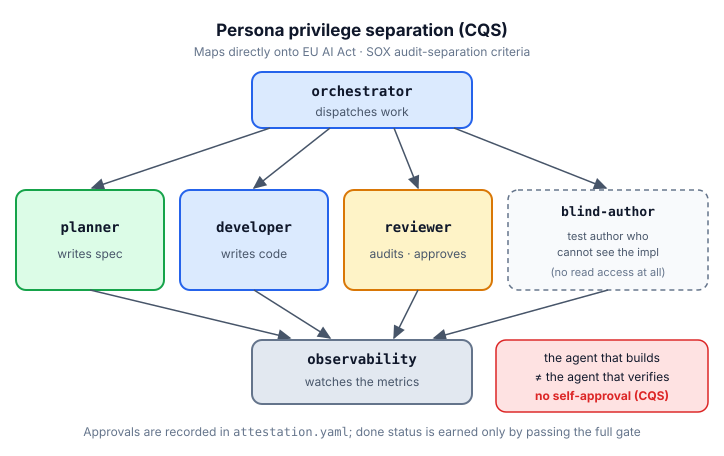

English · 한국어
cladding
The LLM writes the code — cladding owns what comes before and after.
Just as the name suggests, cladding is the verification layer wrapped around your host LLM.
The official reference implementation of the Ironclad standard.
It feeds the project's intent to the host LLM (Claude Code · Codex · Gemini · Cursor) before work begins,
and verifies the result with 36 detectors and a 15-stage gate after the work is done. A division of labor toward the same goal.

This loop aims at one thing —
turning the AI's "it's done" from a claim into a proof.
Intent is preserved as a record · drift is blocked automatically · completion is proven by a verification signature.
So you can ship AI-written code trusting it as much as code a human wrote.
For you, the developer, this means — less time spent reviewing AI code, the code's why still there six months later,
and no more judging "is it really done?" by gut feeling before you ship.
How cladding works with your host LLM
cladding does not write code. The one writing code is always the host LLM. What cladding handles is the two things LLMs are bad at — making them remember the exact intent when they start and verifying the result mechanically when they finish.
- Project map injection — at the start of every conversation, "how many features, what's in progress, the last verification result" is handed to the LLM automatically
- Extract only the intent that matters — only the why, related features, and acceptance criteria for the feature you're working on now (it does not dump the whole spec)
- Apply project rules — the team's forbidden and preferred patterns go in as standing instructions every time
- 15-stage verification gate — type · lint · tests · coverage · architecture · secrets · E2E · evidence, all in one pass
- 36 drift checks — automatic cross-checking in every direction that spec ↔ code ↔ tests stay aligned
- An implementation-blind grader — a separate agent that cannot read the code grades it with tests written from the spec alone
- Run the deliverable directly — actually executing it to block the "tests pass but the program won't run" situation
- Verification signature — a code state that passed every check is stored in the repo as a signature saying "this was verified at this point"
- Audit ledger — every verification run, completion attempt, and block is recorded with who, when, and what the result was
- Repair card — if you try to end a conversation while a decisive check (drift · architecture · secrets) is failing, it stops you once and carries the failure summary into the start of the next conversation automatically
While this loop runs, you just develop in natural language as usual — there are no commands to memorize.
Real-time intervention (map injection · instant block · stop block) works fully in Claude Code. On Codex · Gemini · Cursor the same verification runs through in-conversation tool calls and git · CI gates.
done is not declared, it's earned
The chronic disease of AI coding is that "it's done" gets declared without verification. In cladding, a feature's
status: done is not a value you write but a value you earn.

The limits are disclosed openly too: bypass paths exist that the instant block can't see, and those are caught by after-the-fact verification (the gate · drift checks). The instant block is the first line of defense, after-the-fact verification the second — and neither is a guarantee on its own.
What changes
How behavior differs between a typical AI coding environment and a cladding environment in the same situation.
| Situation | Typical AI coding | cladding |
|---|---|---|
| When code drifts from the spec | Fixed if caught in review | Auto-detected right after editing (alert) · "done" can't pass while drifted |
| When the AI says "it's done" | No choice but to trust its word | done earned only when the gate is GREEN |
| When you end a session in a failed state | Ends as-is, forgotten next time | Stops the exit once and hands off a repair card |
| Two people add a feature at once | merge conflict | hash-8 ID · separate files → 0 conflicts |
| Who verifies AI-written code? | The AI that wrote it self-verifies (risky) | An implementation-blind grader + mechanical gate |
| When you switch AI tools | Reconfigure per tool | 1 spec → auto-wired to 4 hosts |
How it works
Spec → Code → Tests circulates as one cycle — the spec records the why, the gate verifies, and detectors block drift.

1. Spec — the single source of intent (SSoT)
The spec records the why (what is being built and why). A 4-tier single source of truth — intent on top, artifacts below.
| Tier | Role | Edit authority | Authority |
|---|---|---|---|
| A — Spec | Intent (what to build) | Defined by humans | Sealed · LLM must not edit |
| B — Design | Design (how to build it) | Humans edit freely | Checked for consistency with A |
| C — Derived | Artifacts (code · tests) + attestation (verification signature) | LLM · humans | Auto-regenerated from the code |
| D — Audit | Audit record (what happened) | append-only | Immutable |
A takes precedence over every tier below — if the spec (A) and the code (C) differ, the wrong one is the code. If intent (A) wavers, everything wavers, so it is sealed off where the LLM can't touch it.
Sharding · multi-dev safe — like spec/features/<slug>-<hash>.yaml, with a separate file per feature + an 8-character hash ID (e.g. F-d86375d8). Even if two people create a new feature at the same time, they get different files · different IDs, so merge conflicts are 0. Details in Hash-based feature IDs.

2. Gate — the 15-stage Iron Law
To be recognized as "done", you must pass the strict gate (9 decisive of the 15 stages), and CI runs the full 15 stages including E2E · evidence. The same check engine runs as time-based bundles — a fast 3 stages at commit (when the git hook is installed), 9 stages at push · completion, all 15 in CI. Only the depth differs; the check logic is identical.

| Stage | What it checks |
|---|---|
| 1.1 Type · 1.2 Lint | Type errors · code style |
| 1.3 Drift | spec ↔ code drift across 36 detectors |
| 1.4 Commit · 1.5 Arch · 1.6 Secret | Clean working tree · architecture invariant · API key exposure |
| 2.1 Unit · 2.2 Coverage | Unit tests pass · coverage drop blocked |
| 2.3 Spec conformance · 2.4 Deliverable smoke | The implementation-blind grader's tests pass · whether the declared deliverable actually runs (blocks the "tests pass but the deliverable won't run" vacuous green) |
| 3.1 Smoke · 3.2 Perf · 3.3 Visual | e2e core behavior · performance budget · UI visual regression |
| 4.1 Audit · 4.2 UAT | At least 1 piece of evidence per AC (acceptance criterion) · at least 1 piece of evidence per done feature |
3. Detector — 36 drift detectors
Automatically detects drift in every direction among spec · code · test. Full catalog: detector catalog.
| Direction | What it catches | Count | Representative detectors |
|---|---|---|---|
| spec ↔ code | In the spec but not the code, or code straying from the spec | 10 | MISSING_IMPLEMENTATION, AC_DRIFT, DELIVERABLE_INTEGRITY |
| code ↔ test | Code exists but no tests · coverage drop · secrets | 6 | MISSING_TESTS, COVERAGE_DROP, HARDCODED_SECRET |
| spec ↔ test | Spec ACs not verified by tests · false status | 5 | UNTESTED_AC, STATUS_DRIFT, SPEC_CONFORMANCE |
| spec hygiene | Integrity of the spec itself (ID collision · dependency cycle) | 8 | ID_COLLISION, SLUG_CONFLICT, DEPENDENCY_CYCLE |
| environment integrity | Build environment · meta files | 3 | HARNESS_INTEGRITY, META_INTEGRITY |
| verification freshness | Whether code changed after the verification signature | 1 | STALE_ATTESTATION (new in 0.6.0) |
| governance · docs | Policy violations · documentation drift | 3 | ABSENCE_OF_GOVERNANCE, PROJECT_CONTEXT_DRIFT |
4. Cycle — the lifecycle of one feature
Define → sync → implement → earn. You earn "done" only by passing every check.

Multi-Agent — separating the maker from the verifier
The making agent and the verifying agent are separated, so no agent can approve its own work by itself. 0.6.0's blind-author goes one step further — the agent that writes the tests has no tool to read the implementation at all (no Read/Grep granted). "Written without seeing the implementation" becomes a structural fact, not a promise. This separation maps directly onto regulatory · audit standards (EU AI Act · SOX).

Ecosystem
cladding sits at the junction of three existing categories.

Differences from adjacent tools
- Spec Kit · OpenSpec · Tessl · Kiro — tools that help you write specs well. On top of that, cladding keeps automatically cross-checking that the spec and the actual code don't drift, inside the development loop — all the way through completion · commit · CI.
- BMAD · ChatDev · Claude Code Agent Teams — systems for dividing roles among multiple AI agents. cladding's agent division of labor operates on top of that, combined with spec · gate · audit record.
- tdd-guard — a tool that forces the AI to write tests first. cladding's Unit · Coverage · oracle stages among the 15 do the same thing more structurally.
- OpenHands · Cline · Aider · Goose — runners that make the AI write code. cladding is the upper layer that verifies and controls the code those runners write.
cladding's distinction is the combination — tying the core of the above categories into one verification loop.
Install
Two steps — install the infrastructure → create the project spec.
Step 1 — Install the infrastructure (npm)
npm install -g cladding # install the cladding CLI
cd <project> # move into your project
clad setup # auto-wire AI tools (Claude / Codex / Gemini / Cursor)A single clad setup auto-detects the installed AI tools and wires them all — no per-tool configuration needed.
Where clad setup wires (4 hosts · 5 connection points)
| Host (when detected) | Wire location | Auto-activation |
|---|---|---|
Claude Code (~/.claude/) | ~/.claude/plugins/cladding | claude plugin marketplace add + install |
Codex CLI skills (~/.agents/) | ~/.agents/skills/cladding-* | (automatic on Codex restart) |
Codex CLI MCP server (~/.codex/) | [mcp_servers.cladding] in ~/.codex/config.toml | (the TOML entry itself) |
Gemini CLI (~/.gemini/) | ~/.gemini/extensions/cladding | gemini extensions link |
Cursor (~/.cursor/) | mcpServers.cladding in ~/.cursor/mcp.json | (the JSON entry itself) |
clad setup auto-invokes each host's activation command when the claude / gemini binary is on PATH. It's safe to re-run after an upgrade or after installing a new AI tool.
Verification level (honest disclosure): Claude Code is verified across all features through real-usage campaigns (including real-time intervention). Codex · Gemini CLI have their wiring automated + basic behavior confirmed. Cursor wires automatically but is not yet real-usage verified — to be updated as verification lands.
About the MCP server. All 4 hosts wire cladding as an MCP server — only the wire location differs. MCP is not something the user calls directly — there's no/mcpslash, no manual connection step. Each host's AI calls cladding's features on its own in response to natural-language requests, while the user types just one/cladding:initand ordinary conversation.
Step 2 — Init (create the project spec)
In the project directory, called once from inside the AI tool:
[inside the AI tool] /cladding:init "B2B payments SaaS"The project's spec.yaml and related docs are created — once per project.
To raise enforcement: clad init --with-hook (installs pre-commit + pre-push git hooks) · clad init --with-ci (scaffolds the CI gate — real enforcement lives in CI).
Three init scenarios
| Starting situation | Command | What happens |
|---|---|---|
| When you only have an idea | /cladding:init "I'm going to build a B2B payments SaaS" | LLM analyzes the domain → auto-generates spec · docs · policy + 2–3 follow-up questions |
| When you have a planning doc | /cladding:init docs/plan.md | Recognizes the file path → auto-loads its content and uses it as intent |
| Adopting into an existing project | /cladding:init "apply cladding to this project" | Auto-scans the existing code → combines observed patterns + intent |
One init and you're done
Init once and that's it — after that you develop as usual. cladding runs the before/after loop in the background, so there are no commands to memorize.
Upgrade
npm update -g cladding # 1. install the new version
cd <your project> # 2. once per project
clad update # 3. tidy up for the new versionYour code · spec.yaml · docs are left untouched, so it's safe; and if a stricter new version has something to point out, it only tells you (it won't block or fix).
Status
|
version
v0.6.0
2026-06
|
conformance
L4
|
tests
1384/1384
all pass
|
gate
15 stages
36 detectors
|
features
171
170 done · self-spec
|
134 test files · coverage drop blocked by the COVERAGE_DROP detector · install via a single npm path (npm install -g cladding)
The road to Ironclad 1.0 — 1.0 locks only when two independent implementations pass the L4 verification set (GOVERNANCE § 1). cladding is the first.
Docs
- Why cladding (project context)
- 4-tier governance model
- Hash-based feature ID
- 36 detector catalog
- Glossary (EN · KO)
- Governance · roadmap to 1.0
License
MIT. LICENSE · related: Ironclad (the standard being implemented) · harness-boot (seed).